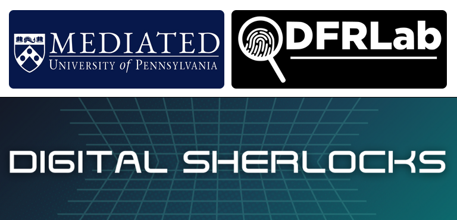
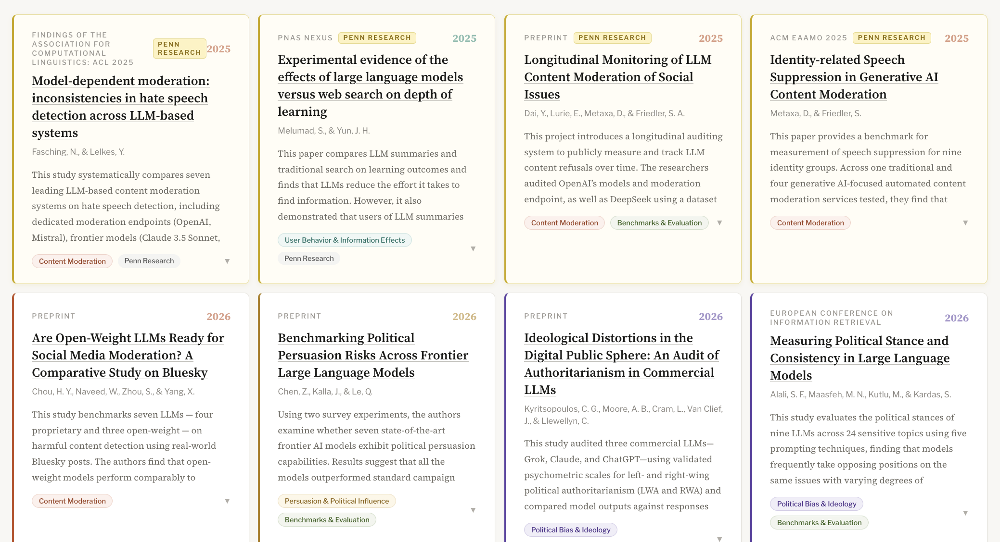
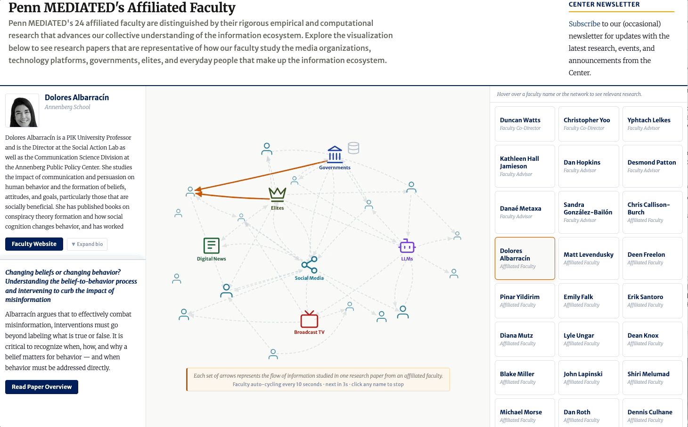
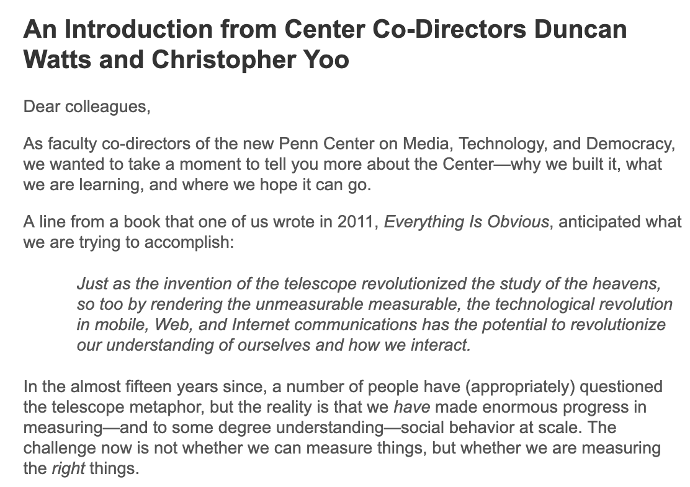
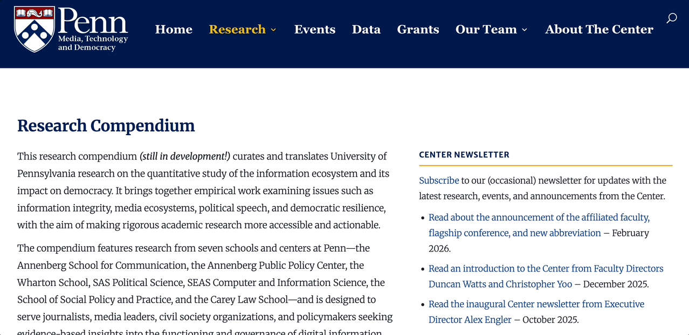
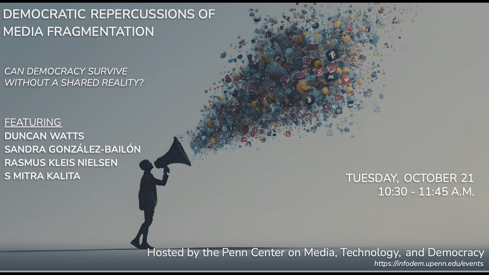
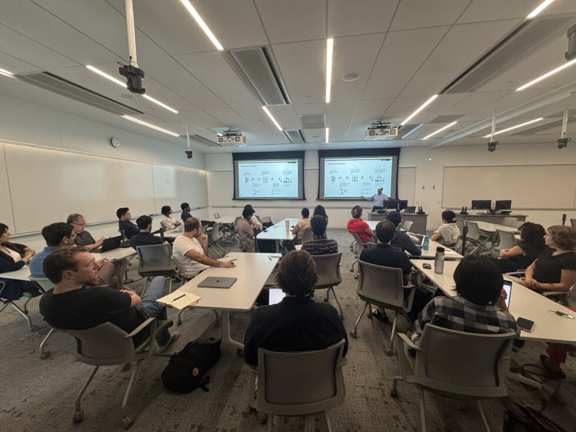

From media bias and LLM outputs to civic discourse and information ecosystems, our research spans the full landscape of democratic health.
Explore All Research
— Center on Media, Technology and Democracy
We combine cutting-edge data science and social research to map, measure, and strengthen the foundations of democratic society.

Penn MEDIATED Affiliated Faculty Danaé Metaxa, Jane Esberg, and Dolores Albaraccín will contribute trainings to DFR Lab's Digital Sherlocks training, directly informing practitioners on the front lines of information integrity and democratic resilience.
We are honored to welcome one of the foremost scholars of democratic governance, President Emerita Amy Gutmann, as a faculty advisor.

Tracking how LLMs discuss political topics, refer to politicians, and relate election information.

We are proud to welcome affiliated faculty across Penn's schools whose research explores how media and technology shape political attitudes and the information ecosystem.

Co-Directors Duncan Watts and Christopher Yoo present their vision for the Center, and for the future of research of the information ecosystem.

Our new redesigned research compendium is a one-stop shop for Penn research on the quantitative study of the information ecosystem — search or use categorical tags to find essential research on news media, online platforms, misinformation, persuasion, AI, and more.
We awarded $160,000 in 12 grants to fund the science of the information ecosystem, including on media narratives, LLM political speech, and peer-to-peer conversations.
From media bias and LLM outputs to civic discourse and information ecosystems, our research spans the full landscape of democratic health.
Explore All Research
Leading media scholars — including Duncan Watts, Sandra González-Bailón, Rasmus Kleis Nielsen, and S. Mitra Kalita — explored how media fragmentation relates to American democratic decline.

A new faculty speaker series on the empirical science of the information ecosystem, open to Penn PhD students, postdocs, and faculty.
